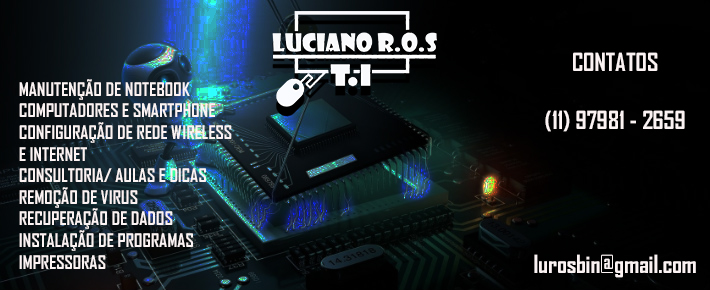

Bem vindos, Sou Luciano
Sou bacharel em Análise de Sistemas e Tecnologia da Informação, trabalho com TI há mais de 10 anos. Sou analista de suporte, programador, mecanico, garagista, ciclista e entusiasta de tudo que envolva tecnologia entre outras funções.
Comecei minha carreira como curioso e logo depois de algum tempo ingressei em um curso técnico na ETECSP onde percebi que gostava muito da área e precisava me dedicar. A´pós alguns anos trabalhando como autonomo decidi ingressar em uma faculdade assim me tornando um bacharel em Análise de Sistemas e Tecnologia da Informação e podendo atuar mais fortemente no mercado corporativo e ganhar mais experiência.
No campo profissional sou criativo, curioso, persistente e paciente, adaptavel e com bom relacionamento interpessoal. Em busca de conhecimento e experiência. Com bons conhecimentos em programação orientada à objetos, UML e banco de dados relacionais, servidores windows e linux, além de ótimos conhecimentos de hardware e software na área de TI e eletrônica.
Desenvolvi este site com o intuito evoluir e obter novas conquistas, contatos e compartilhar idéias e experiencias.
Um pouco da historia da lamborghini
Veja Outros Trabalhos
Perfil Pessoal
